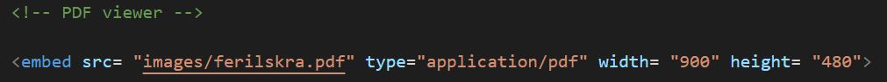
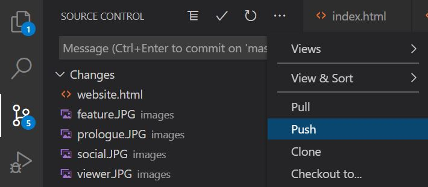

Milling something smaller: A negative mold.
The fifth project of the semester, like the previous one, was part of a larger group project. Now, however, milling a negative mold. Unfortunately, because of how the pandemic has escalated, a few weeks ago we recieved the sad news that the allotted time for the project would not suffice and that there would inherently be some cut-backs. For this project we decided on something we were all familiar with and easily executable, a LEGO block.
We decided to divide the project among ourselves so each of us only oversaw a part of it. My contribution to the project involved designing the block. (The Lego block's toolpaths can be found here.) During the course of this project I utilized only one program: Fusion 360.
VCarve is a software solution for cutting parts on a CNC Router. It allows you to produce 2D patterns with profile, pocket, drill and inlay toolpaths.

The coding language used, as per the instructions, is HTML5, a language I was not familar with until now. The choice was to either write your own website from scratch or to modify and customize a preset template. I chose the latter. The creators of this template, Prologue, are HTML5 UP (https://html5up.net), a free source of website templates written in HTML5. Although I was not familiar with HTML, I am somewhat comprehensive in other programming languages (Python, Java) so I did not feel like I had to particularly prepare myself for the modifying of a preset template. Therefore, I just set up a GiHub repository, changed the URL to my liking and began working.
In order to get the result I wanted, I oviously had to make some changes to the original template. Some of these changes demanded new objects be created, such as the ones seen below, the general structure for which I found on StackOverflow:
This allowed me to align two or more pictures horizontally on the page.
Another example is this:
This is allows me to present an interactive pdf document within the website, which provided a very neat and useful solution in presenting my resume (can be viewed under "About Me - Resume").
A very handy feature in Visual Studio Code is the option through Source Control to track changes constantly and give them a title/comment, which can be pushed directly to your GitHub repository after you have commited them. This feature makes it very easy to navigate your code's version history.
I used this alot while working on the website and will definitely continue to do so in future projects.
The entire code can be found on the website's repository My website